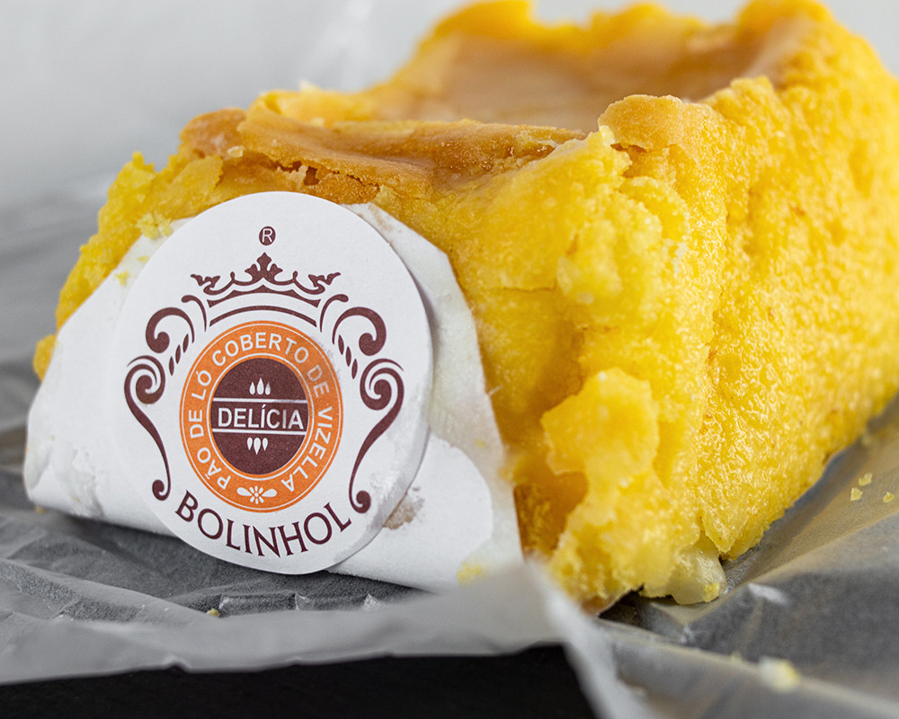

Bolinhol de Vizela

Description
Eggs Sugar and Flour: that's how the ambassador sweet of Vizela is made! In its essence the "Pão-de-Ló Coberto de Vizela" is characterized by a simple recipe in its ingredients, but very special in its way of making it as it is a rich, fluffy and airy dough, with a certain moisture that comes from its covering.
Another of the characteristics that makes it special is that its manufacturing is supported by the knowledge of its people and the maintenance of the traditional manufacturing method.
Ingredients
Main
- 12 Egg yolks
- 5 Eggs
- 200g of sugar
- 125g of flour T65
Top
- 250g of sugar
- 2dl of water
Steps
Main
- Line a rectangular shape pan with coaster paper;
- Add the sugar to the egg yolks and the eggs, beat with an electric mixer for 10 minutes, until you obtain a whitish and voluminous mass;
- Slowly fold in the sifted flour;
- Put the dough into the lined pan and take to the oven at 170º for 25/30 minutes;
- After cooking, remove it from the oven and place it on a wire rack, keeping the paper.
Top
- Bring the sugar and water to the stove and let it boil for 5 minutes, or until it hits 115º;
- Remove the syrup, let it cool slightly and then brush the sides of the sponge cake with the still hot and liquid syrup;
- Using the back of a wooden spoon, stir the sugar syrup against the sides of the pan until it becomes opaque;
- Add it to the syrup and proceed again against the walls of the pan;
- Mix well and when the syrup becomes thicker and more opaque, it is ready;
- Cover the Bolinhol with the sugar syrup and let it dry.
Enjoy!!